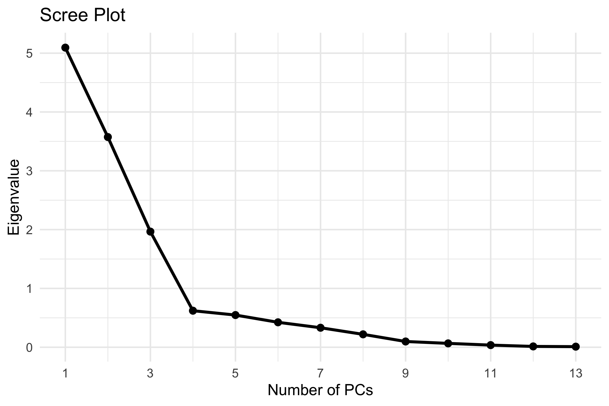
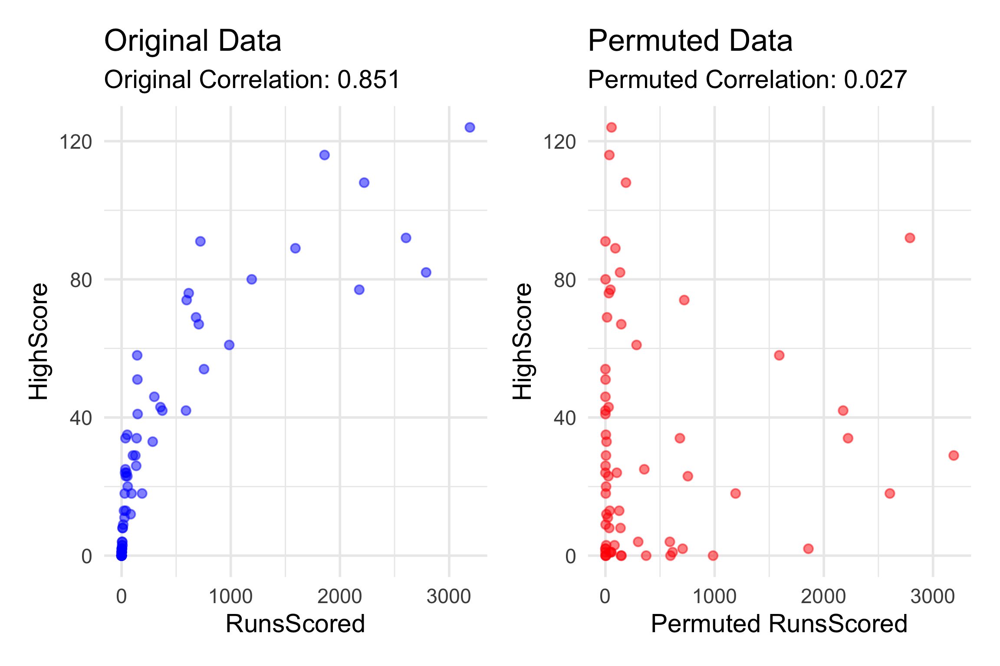
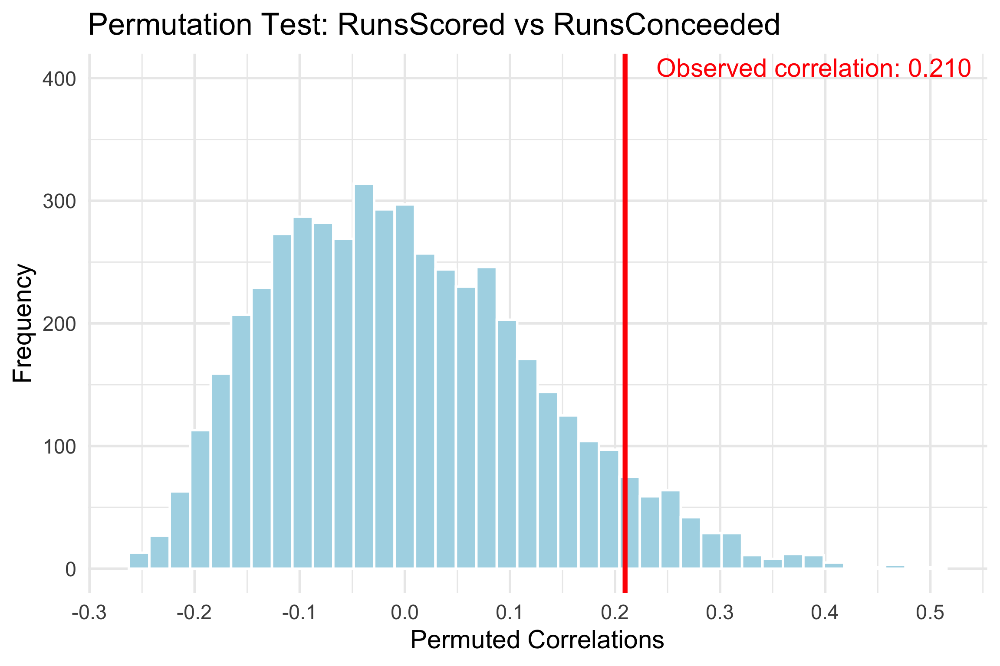
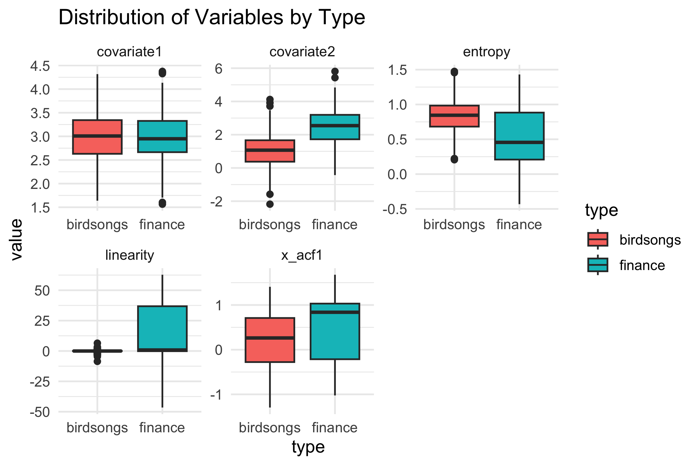
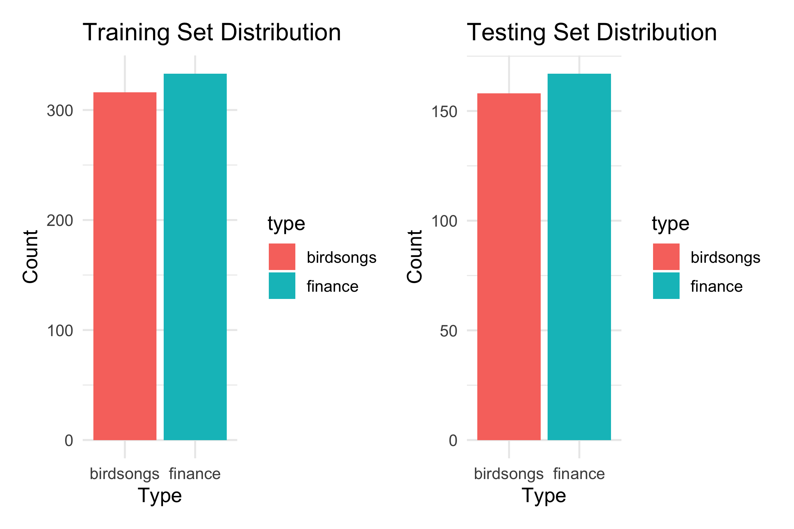
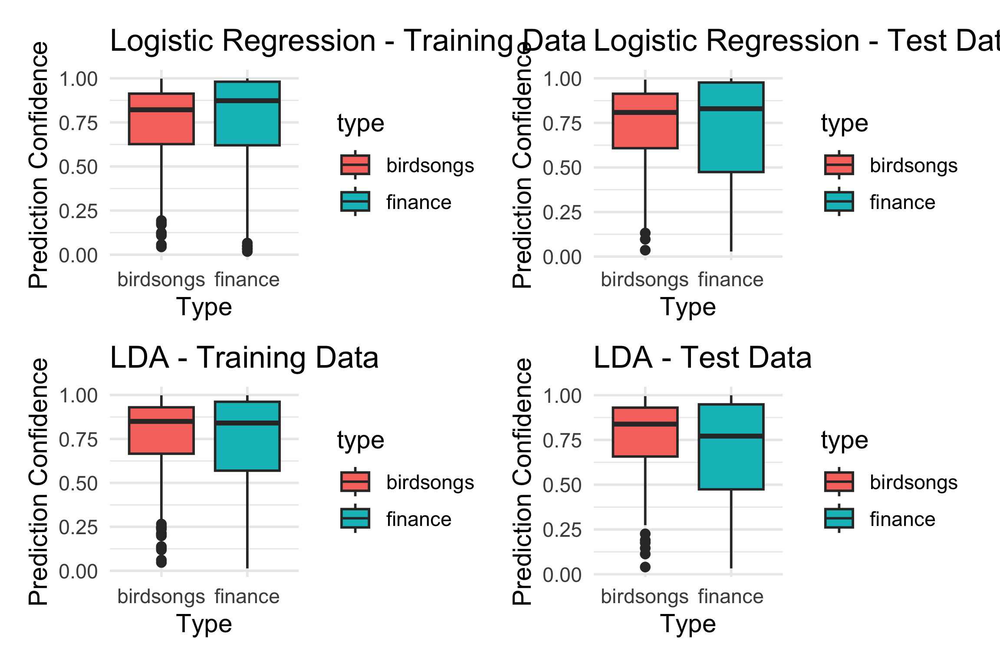
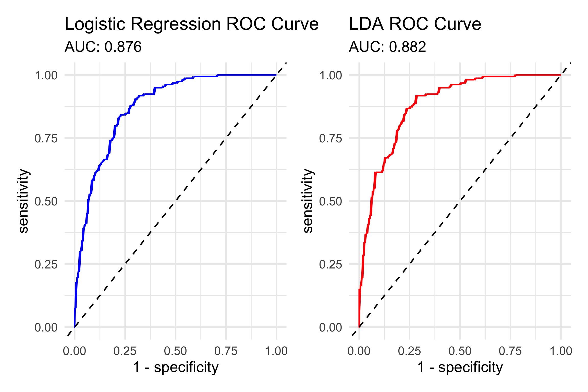
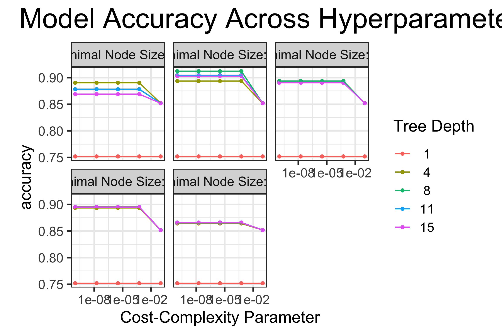
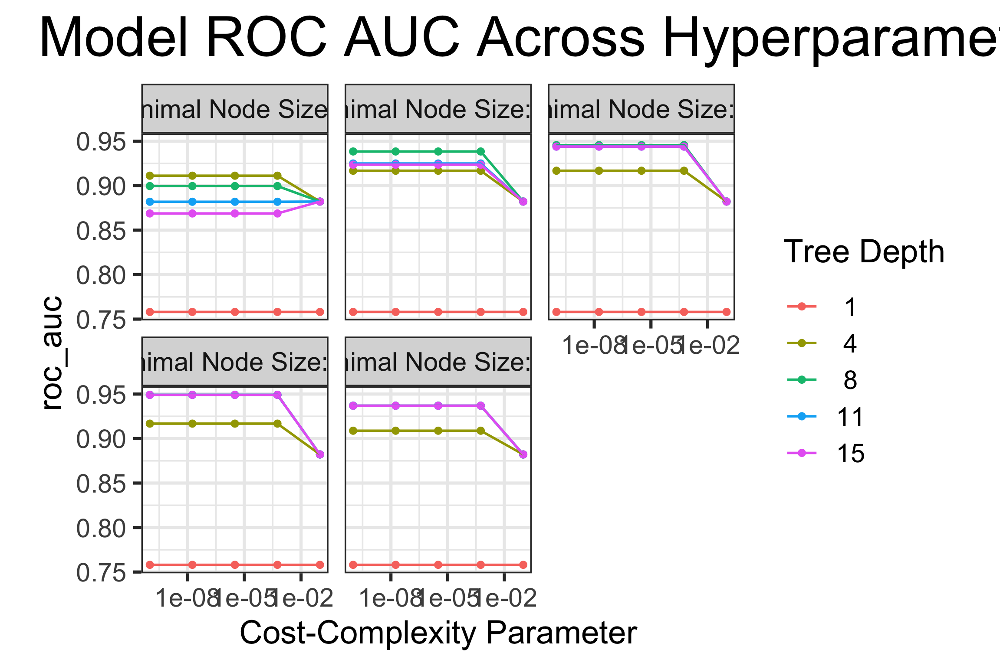

Code
# Load the data
engwt20 <- read.csv("engwt20.csv")This project explores two areas of statistical learning: understanding structure in multivariate data using resampling, and comparing modelling approaches for a supervised classification task. In the first part, the focus is on the women’s cricket dataset, where principal component analysis (PCA) is used to identify the main sources of variation after removing non-numeric variables. Bootstrap resampling and permutation tests are then used to assess which variables contribute most strongly to the leading components and whether observed relationships between variables are stronger than what would be expected by chance.
The second part shifts to a classification problem involving time-series features from birdsongs and financial data. Here, several classifiers: logistic regression, linear discriminant analysis, decision trees, random forests, and boosted trees are fitted and evaluated. The analysis examines model performance, tuning behaviour, and how well each approach captures the patterns that differentiate the two classes.
This section applies PCA to the women’s cricket data (after removing irrelevant variables) to identify the main directions of variation in player performance. Bootstrap resampling is then used to determine which variables consistently contribute to PC1 and PC2, providing stability insight beyond the original PCA loadings.
Data Wrangling
# Load the data
engwt20 <- read.csv("engwt20.csv")Checking Missing Values
# Check for missing values
any(is.na(engwt20))[1] FALSEData Structure
#Analysing the structure of the data
#str(engwt20)
#summary(engwt20)Variable Selection
#Variable Selection
data_criket <- engwt20 |>
select(-Player, -Country, -Start, -End, -HighScoreNotOut, -Matches, -InningsBowled, -Overs, -InningsBatted, -FiveWickets, -Hundreds)
names(data_criket) [1] "Maidens" "RunsConceeded" "Wickets"
[4] "BowlingAverage" "Economy" "BowlingStrikeRate"
[7] "FourWickets" "NotOuts" "RunsScored"
[10] "HighScore" "BattingAverage" "Fifties"
[13] "Ducks" PCA
# Applying PCA
pca_res <- prcomp(data_criket, scale = TRUE, center = TRUE)
summary(pca_res)Importance of components:
PC1 PC2 PC3 PC4 PC5 PC6 PC7
Standard deviation 2.2570 1.8905 1.4020 0.78804 0.7398 0.65106 0.5757
Proportion of Variance 0.3919 0.2749 0.1512 0.04777 0.0421 0.03261 0.0255
Cumulative Proportion 0.3919 0.6668 0.8180 0.86576 0.9079 0.94046 0.9660
PC8 PC9 PC10 PC11 PC12 PC13
Standard deviation 0.46836 0.31245 0.25622 0.19035 0.11782 0.09903
Proportion of Variance 0.01687 0.00751 0.00505 0.00279 0.00107 0.00075
Cumulative Proportion 0.98283 0.99034 0.99539 0.99818 0.99925 1.00000pca_res$rotation[, 1:2] PC1 PC2
Maidens -0.220802813 0.31424912
RunsConceeded -0.294161264 0.35568617
Wickets -0.286828045 0.35361350
BowlingAverage 0.001003561 0.33803083
Economy 0.026102389 0.35620360
BowlingStrikeRate -0.017606471 0.33259501
FourWickets -0.226182850 0.27976834
NotOuts -0.396975004 0.02335211
RunsScored -0.363915135 -0.20632957
HighScore -0.351615787 -0.25637332
BattingAverage -0.319672992 -0.22681130
Fifties -0.315194665 -0.21558036
Ducks -0.339261537 -0.11355162PC1 explains 39.2% of the total variance and reflects overall player performance. It has strong negative loadings from batting stats like NotOuts, RunsScored, HighScore, and BattingAverage, alongside bowling variables such as Wickets, RunsConceeded, and Maidens. Since both batting and bowling contribute in the same direction, lower PC1 scores indicate players who perform well in both areas.
PC2 accounts for 27.5% of the variance and highlights a contrast between bowling and batting performance. Bowling variables like Economy, BowlingAverage, BowlingStrikeRate, and Wickets have strong positive loadings, while batting stats such as RunsScored, HighScore, and BattingAverage load negatively. Higher PC2 scores therefore indicate players who are stronger bowlers relative to their batting ability
Scree Plot
# Extract eigenvalues
eigenvalues <- pca_res$sdev^2
# Create data frame for ggplot
scree_df <- tibble(
PC = 1:length(eigenvalues),
Eigenvalue = eigenvalues
)
# Plot using ggplot2
ggplot(scree_df, aes(x = PC, y = Eigenvalue)) +
geom_line(color = "black", linewidth = 1) +
geom_point(color = "black", size = 2) +
scale_x_continuous(breaks = seq(1, max(scree_df$PC), by = 2)) +
labs(title = "Scree Plot", x = "Number of PCs", y = "Eigenvalue") +
theme_minimal()
The elbow in the scree plot appears at the 4th component, with the first three PCs explaining over 81% of the total variance (PC1: 39.2%, PC2: 27.5%, PC3: 15.1%). Since the eigenvalues flatten out after that, adding more PCs wouldn’t capture much additional information and variance. Moving forward we will focus only on the first two components.
Biplot
# Create data frame with PCA scores (PC1 and PC2) and player names
eng_pca_scores <- as_tibble(pca_res$x[, 1:2]) |>
mutate(Player = engwt20$Player)
# Create data frame with PCA loadings (eigenvectors)
eng_pca_loadings <- as_tibble(pca_res$rotation[, 1:2]) |>
mutate(
origin = 0,
variable = colnames(data_criket),
PC1s = PC1 * (pca_res$sdev[1]^2 * 2.5),
PC2s = PC2 * (pca_res$sdev[2]^2 * 2.5)
)
# Create biplot
ggplot() +
geom_segment(data = eng_pca_loadings,
aes(x = origin, xend = PC1s,
y = origin, yend = PC2s),
colour = "orange") +
geom_text(data = eng_pca_loadings,
aes(x = PC1s, y = PC2s, label = variable),
colour = "orange", nudge_x = 0.7) +
geom_point(data = eng_pca_scores,
aes(x = PC1, y = PC2)) +
geom_text(data = filter(eng_pca_scores, abs(PC2) > 1.3),
aes(x = PC1, y = PC2, label = Player),
nudge_y = 0.15, nudge_x = -0.5, size = 3) +
xlab("PC1") + ylab("PC2") +
ggtitle("Biplot of First Two Principal Components (engwt20)") +
theme_minimal()
Bootstrapping PCA Loadings
# Bootstrap function for PC1
compute_PC1 <- function(data, index) {
pc1 <- prcomp(data[index, ], center = TRUE, scale. = TRUE)$rotation[, 1]
if (sign(pc1[1]) < 0) pc1 <- -pc1
return(pc1)
}
set.seed(2025)
PC1_boot <- boot(data = scale(data_criket), statistic = compute_PC1, R = 1000)
colnames(PC1_boot$t) <- colnames(data_criket)
# Summarise PC1 bootstrap
PC1_boot_ci <- as_tibble(PC1_boot$t) |>
pivot_longer(everything(), names_to = "var", values_to = "coef") |>
group_by(var) |>
summarise(
q2.5 = quantile(coef, 0.025),
median = median(coef),
q97.5 = quantile(coef, 0.975)
) |>
mutate(t0 = PC1_boot$t0)
PC1_boot_ci# A tibble: 13 × 5
var q2.5 median q97.5 t0
<chr> <dbl> <dbl> <dbl> <dbl>
1 BattingAverage -0.362 0.315 0.386 0.221
2 BowlingAverage -0.207 0.00641 0.230 0.294
3 BowlingStrikeRate -0.183 0.0251 0.222 0.287
4 Ducks -0.316 0.333 0.384 -0.00100
5 Economy -0.244 -0.0209 0.268 -0.0261
6 Fifties -0.351 0.314 0.372 0.0176
7 FourWickets 0.0100 0.224 0.314 0.226
8 HighScore -0.404 0.343 0.420 0.397
9 Maidens 0.0327 0.213 0.294 0.364
10 NotOuts -0.311 0.389 0.421 0.352
11 RunsConceeded 0.0241 0.294 0.357 0.320
12 RunsScored -0.396 0.358 0.413 0.315
13 Wickets 0.0227 0.288 0.344 0.339 95% Bootstrap Confidence Intervals for PC1 Loadings
pb_pc1 <- ggplot(PC1_boot_ci, aes(x = var, y = t0)) +
geom_hline(yintercept = 0, linetype = 2, colour = "red") +
geom_point(size = 2) +
geom_errorbar(aes(ymin = q2.5, ymax = q97.5), width = 0.1) +
xlab("") + ylab("Loading") +
ggtitle("PC1 Loadings with 95% Bootstrap CI") +
theme_minimal() +
theme(axis.text.x = element_text(angle = 45, hjust = 1))
pb_pc1
Bootstrap Analysis of PC2 Loadings
# Bootstrap function for PC2
compute_PC2 <- function(data, index) {
pc2 <- prcomp(data[index, ], center = TRUE, scale. = TRUE)$rotation[, 2]
if (sign(pc2[1]) < 0) pc2 <- -pc2
return(pc2)
}
set.seed(2025)
PC2_boot <- boot(data = scale(data_criket), statistic = compute_PC2, R = 1000)
colnames(PC2_boot$t) <- colnames(data_criket)
# Summarise PC2 bootstrap results
PC2_boot_ci <- as_tibble(PC2_boot$t) |>
pivot_longer(everything(), names_to = "var", values_to = "coef") |>
group_by(var) |>
summarise(
q2.5 = quantile(coef, 0.025),
median = median(coef),
q97.5 = quantile(coef, 0.975)
) |>
mutate(t0 = PC2_boot$t0)
PC2_boot_ci# A tibble: 13 × 5
var q2.5 median q97.5 t0
<chr> <dbl> <dbl> <dbl> <dbl>
1 BattingAverage -0.332 -0.221 0.0629 0.314
2 BowlingAverage 0.120 0.320 0.445 0.356
3 BowlingStrikeRate 0.126 0.317 0.431 0.354
4 Ducks -0.228 -0.104 0.157 0.338
5 Economy 0.163 0.344 0.427 0.356
6 Fifties -0.341 -0.205 0.0176 0.333
7 FourWickets 0.155 0.283 0.406 0.280
8 HighScore -0.351 -0.252 0.0382 0.0234
9 Maidens 0.217 0.320 0.427 -0.206
10 NotOuts -0.107 0.0246 0.291 -0.256
11 RunsConceeded 0.221 0.353 0.486 -0.227
12 RunsScored -0.314 -0.199 0.0634 -0.216
13 Wickets 0.225 0.353 0.483 -0.114 95% Bootstrap Confidence Intervals for PC2 Loadings
pb_pc2 <- ggplot(PC2_boot_ci, aes(x = var, y = t0)) +
geom_hline(yintercept = 0, linetype = 2, colour = "red") +
geom_point(size = 2) +
geom_errorbar(aes(ymin = q2.5, ymax = q97.5), width = 0.1) +
xlab("") + ylab("Loading") +
ggtitle("PC2 Loadings with 95% Bootstrap CI") +
theme_minimal() +
theme(axis.text.x = element_text(angle = 45, hjust = 1))
pb_pc2
Based on the analysis, PC1 reflects overall activity, with large contributions from both batting (NotOuts, RunsScored, HighScore) and bowling (Wickets, RunsConceded), as all loadings share the same direction. However, when analysing the bootstrap 95% confidence intervals, only FourWickets, Maidens, RunsConceded, and Wickets show intervals above zero, which indicates these four bowling metrics are the most stable and significantly associated with PC1. In contrast, key batting variables like RunsScored, BattingAverage, and HighScore cross zero, suggesting their influence on PC1 is weaker and not consistently reflected across resamples.
Whereas in PC2, The original PCA loadings show a clear contrast between bowling and batting as in bowling metrics have positive loadings, while batting metrics are negative. This separation suggests that PC2 distinguishes bowlers from batters. The bootstrap confidence intervals support this finding, intervals for bowling-related variables such as Economy, Wickets, BowlingAverage, BowlingStrikeRate, RunsConceeded and Maidens remain fully above zero, indicating a consistent and significant contribution to PC2. In contrast, intervals for batting metrics like RunsScored, HighScore, BattingAverage, and Fifties are negative or cross zero, suggesting their influence on PC2 is weaker and contribution is less stable.
Here we investigate whether observed correlations in the cricket data are stronger than what would occur under randomness. Using permutation tests, null distributions, and lineup plots, we assess the strength, visual detectability, and statistical significance of relationships such as RunsScored–HighScore.
RunsScored vs HighScore
set.seed(201)
# Original correlation
original_corr <- data_criket |>
summarise(correlation = cor(RunsScored, HighScore)) |>
pull(correlation)
# Single permutation
df_perm <- data_criket |>
specify(RunsScored ~ HighScore) |>
hypothesize(null = "independence") |>
generate(reps = 1, type = "permute")
data_with_perm <- data_criket |>
mutate(Permuted_RunsScored = df_perm$RunsScored)
# Plot the Original Data
p1 <- ggplot(data_criket, aes(x = RunsScored, y = HighScore)) +
geom_point(alpha = 0.5, color = "blue") +
labs(
title = "Original Data",
subtitle = paste0("Original Correlation: ", round(original_corr, 3)),
x = "RunsScored",
y = "HighScore"
) +
theme_minimal()
# Permuted plot
p2 <- ggplot(data_with_perm, aes(x = Permuted_RunsScored, y = HighScore)) +
geom_point(alpha = 0.5, color = "red") +
labs(
title = "Permuted Data",
subtitle = paste0("Permuted Correlation: ", round(cor(data_with_perm$Permuted_RunsScored, data_criket$HighScore), 3)),
x = "Permuted RunsScored",
y = "HighScore"
) +
theme_minimal()
# Combine with patchwork
p1 | p2
Permutation Distribution
# Set seed
set.seed(123)
# Permutation distribution
perm_cor <- data_criket |>
specify(RunsScored ~ HighScore) |>
hypothesize(null = "independence") |>
generate(reps = 5000, type = "permute") |>
calculate(stat = "correlation")
# Plot permutation
ggplot(perm_cor, aes(x = stat)) +
geom_histogram(bins = 40, fill = "skyblue", color = "white") +
geom_vline(xintercept = original_corr, color = "red", linewidth = 1) +
annotate("text", x = original_corr, y = 400,
label = sprintf("Observed correlation: %.3f", original_corr),
color = "red", hjust = 1.1, vjust = 1) +
scale_x_continuous(breaks = seq(-0.5, 1, by = 0.1)) +
labs(
title = "Permutation Test: RunsScored vs HighScore",
x = "Permuted Correlations",
y = "Frequency"
) +
theme_minimal()
# One-sided p-value
p_value_1 <- perm_cor |>
summarise(p = mean(stat >= original_corr)) |>
pull(p)
original_corr[1] 0.850749p_value_1[1] 0Observed correlation: 0.851, indicating a very strong positive relationship. This means that players who score more total runs are likely to have higher individual top scores as well. Null hypothesis: There is no association between RunsScored and HighScore. Permutation result: After 5000 permutations under null hypothesis, none of the permuted correlations reach/exceed the observed value. The permutation distribution of correlations is approximately centered around 0, as expected if there were no true relationship. P-value: 0.00, indicating strong evidence against the null hypothesis.
Line up
set.seed(912)
df_l <- lineup(null_permute('HighScore'), data_criket)
ggplot(df_l, aes(x=HighScore, y=RunsScored)) +
geom_point() +
facet_wrap(~.sample)
Plot 15 clearly stands out from the lineup, shows a structured upward trend that is distinct compared to the other plots. This indicates that the observed relationship between RunsScored and HighScore is strong enough to be visually identifiable and the correlation is statistically significant. The true data plot is 15.
RunsScored vs RunsConceeded
set.seed(123)
# Original correlation
original_corr_con <- data_criket |>
summarise(correlation = cor(RunsScored, RunsConceeded)) |>
pull(correlation)
original_corr_con[1] 0.20957# Hypothesize null of independence and permute
df_perm_con <- data_criket |>
specify(RunsScored ~ RunsConceeded) |>
hypothesize(null = "independence") |>
generate(reps = 1, type = "permute")
perm_data <- data_criket |>
mutate(Permuted_RunsScored = df_perm_con$RunsScored)
# Original plot
p1_conceded <- ggplot(data_criket, aes(x = RunsScored, y = RunsConceeded)) +
geom_point(alpha = 0.5, color = "blue") +
labs(
title = "Original Data",
subtitle = paste0("Original Correlation: ", round(original_corr_con, 3)),
x = "RunsScored",
y = "RunsConceded"
) +
theme_minimal()
# Permuted plot
p2_conceeded <- ggplot(perm_data, aes(x = Permuted_RunsScored, y = RunsConceeded)) +
geom_point(alpha = 0.5, color = "red") +
labs(
title = "Permuted Data",
subtitle = paste0("Permuted Correlation: ", round(cor(perm_data$Permuted_RunsScored, perm_data$RunsConceeded), 3)),
x = "Permuted RunsScored",
y = "RunsConceded"
) +
theme_minimal()
p1_conceded | p2_conceeded
Permutation Distribution
set.seed(201)
# Step 2: Perform 5000 permutations
perm_cor_con <- data_criket |>
specify(RunsScored ~ RunsConceeded) |>
hypothesize(null = "independence") |>
generate(reps = 5000, type = "permute") |>
calculate(stat = "correlation")
# Step 3: Plot the permutation distribution
ggplot(perm_cor_con, aes(x = stat)) +
geom_histogram(bins = 40, fill = "lightblue", color = "white") +
geom_vline(xintercept = original_corr_con, color = "red", linewidth = 1) +
annotate("text", x = original_corr_con, y = 400,
label = sprintf("Observed correlation: %.3f", original_corr_con),
color = "red", hjust = -0.1, vjust = -0.1) +
scale_x_continuous(breaks = seq(-0.5, 0.5, by = 0.1)) +
labs(
title = "Permutation Test: RunsScored vs RunsConceeded",
x = "Permuted Correlations",
y = "Frequency"
) +
theme_minimal()
# Step 4: Calculate the one-sided p-value
p_value_con <- perm_cor_con |>
summarise(p = mean(stat >= original_corr_con)) |>
pull(p)
# Display results
original_corr_con[1] 0.20957p_value_con[1] 0.0674Observed correlation: 0.210 - a weak positive relationship. Null hypothesis: There is no association between RunsScored and RunsConceeded. Permutation result: 6.7% of permuted correlations were as extreme or more than the observed value. P-value: 0.0674 Interpretation: The observed correlation is weak and not statistically significant, as the p-value exceeds the 5% threshold. The similar scatter patterns in the permuted plot suggest the association may be influenced more by the distribution of RunsConceeded rather than a true underlying relationship. Conclusion: There is weak evidence of a positive association, but it is not strong enough to confidently rule out random chance as a possible explanation.
Line up
set.seed(912)
df_l <- lineup(null_permute('RunsConceeded'), data_criket)
ggplot(df_l, aes(x=RunsConceeded, y=RunsScored)) +
geom_point() +
facet_wrap(~.sample)
In the lineup plot for RunsScored versus RunsConceded, the true data plot is positioned at 15. Unlike the clear distinction observed with RunsScored and HighScore, the data plot is not visually distinctive from the other plots. This lack of clear separation suggests that the association between RunsScored and RunsConceded is not strong enough to be easily detected visually, as observed above the relationship is weak and may be influenced by randomness.
Here we examine how birdsong and financial time-series features differ through visualisations, grand tours, and plots. The goal is to understand class separation and assess assumptions such as normality, equal variances and independence required for linear classifiers.
Data Analysis
#load data
t_data <- read_csv("finance_and_birds.csv")
glimpse(t_data)Rows: 974
Columns: 6
$ linearity <dbl> -0.126415857, 1.005038671, -0.424191444, -0.225349569, -3.3…
$ entropy <dbl> 0.8983480, 0.8557268, 0.9292932, 0.8072891, 0.6784242, 0.81…
$ x_acf1 <dbl> -0.60861249, 1.23397887, 1.01013491, 0.45327656, 0.30615984…
$ type <chr> "birdsongs", "birdsongs", "birdsongs", "birdsongs", "birdso…
$ covariate1 <dbl> 2.715089, 3.263722, 3.435156, 2.387939, 2.988109, 3.074436,…
$ covariate2 <dbl> 2.81219129, -0.21610577, 0.87087536, 0.59675859, 1.81582598…summary(t_data) linearity entropy x_acf1 type
Min. :-46.54211 Min. :-0.4317 Min. :-1.2944 Length:974
1st Qu.: -0.17822 1st Qu.: 0.4122 1st Qu.:-0.2514 Class :character
Median : 0.09786 Median : 0.7521 Median : 0.5120 Mode :character
Mean : 7.87493 Mean : 0.6778 Mean : 0.3519
3rd Qu.: 4.23087 3rd Qu.: 0.9514 3rd Qu.: 0.9297
Max. : 62.78745 Max. : 1.4751 Max. : 1.6774
covariate1 covariate2
Min. :1.565 Min. :-2.1790
1st Qu.:2.651 1st Qu.: 0.9126
Median :2.980 Median : 1.7112
Mean :3.002 Mean : 1.7641
3rd Qu.:3.337 3rd Qu.: 2.6843
Max. :4.375 Max. : 5.8076 # Check for missing values
sum(is.na(t_data))[1] 0# Summary statistics
t_data %>%
summarise(across(where(is.numeric), list(mean = mean, sd = sd, min = min, max = max), na.rm = TRUE))# A tibble: 1 × 20
linearity_mean linearity_sd linearity_min linearity_max entropy_mean
<dbl> <dbl> <dbl> <dbl> <dbl>
1 7.87 19.4 -46.5 62.8 0.678
# ℹ 15 more variables: entropy_sd <dbl>, entropy_min <dbl>, entropy_max <dbl>,
# x_acf1_mean <dbl>, x_acf1_sd <dbl>, x_acf1_min <dbl>, x_acf1_max <dbl>,
# covariate1_mean <dbl>, covariate1_sd <dbl>, covariate1_min <dbl>,
# covariate1_max <dbl>, covariate2_mean <dbl>, covariate2_sd <dbl>,
# covariate2_min <dbl>, covariate2_max <dbl># Check the class distribution
t_data %>% count(type)# A tibble: 2 × 2
type n
<chr> <int>
1 birdsongs 474
2 finance 500# Set the levels explicitly
t_data <- t_data |> mutate(type = factor(type, levels = c("birdsongs", "finance")))
levels(t_data$type)[1] "birdsongs" "finance" Boxplots: Distribution of Variables by Type
# Box plot of numerical variables grouped by class
t_data %>%
pivot_longer(cols = -type, names_to = "variable", values_to = "value") %>%
ggplot(aes(x = type, y = value, fill = type)) +
geom_boxplot() +
facet_wrap(~variable, scales = "free") +
theme_minimal() +
labs(title = "Distribution of Variables by Type")
The boxplots reveal clear differences between birdsongs and finance time series across several features. Linearity and covariate2 display the most noticeable separations—finance time series tend to have higher values and a wider spread in both features, making them strong candidates for classification. Entropy also shows some separation, with birdsongs generally having slightly higher median values and finance exhibiting more variability. In contrast, covariate1 and x_acf1 are quite similar across both types, suggesting they may not be as useful for classification. These findings indicate that linearity, covariate2, and entropy could be the strongest predictors moving forward.
Scatterplot Matrix
# Convert the 'type' to a factor
t_data <- t_data %>%
mutate(type = as.factor(type))
# Improved ggpairs plot
ggpairs(t_data,
columns = c(1,2,3,5,6),
aes(color = type, alpha = 0.6),
lower = list(continuous = wrap("points", size = 0.6)),
diag = list(continuous = wrap("densityDiag", alpha = 0.4)),
upper = list(continuous = wrap("cor", size = 3))) +
theme_minimal() +
theme(axis.text.x = element_text(angle = 45, hjust = 1))
Overall, entropy and x_acf1 show the strongest separation, with finance exhibiting clear negative correlations with entropy and positive correlations with x_acf1. Covariate2 shows moderate distinction, while linearity and covariate1 display minimal separation.
Assumptions
Tourr
# Standardize the numerical columns
data_standardized <- t_data %>%
mutate(across(where(is.numeric), scale))
# Data for the tour
tour_data <- data_standardized %>%
select(linearity, entropy, x_acf1, covariate1, covariate2)
#x11()
#animate_xy(tour_data, col = as.factor(data_standardized$type), axes = "bottomleft",
# rescale=TRUE)
#set.seed(645)
render_gif(tour_data,
grand_tour(),
display_xy(half_range = 3.8,
axes="bottomleft", cex=1.1,
col = as.factor(data_standardized$type)),
gif_file = "tour_fb.gif",
apf = 1/60,
frames = 1800,
width = 600,
height = 600)[1] "/Users/poojarajendranraju/Desktop/personal_website/git_verson/Personal-Portfolio/posts/ml2/tour_fb.gif"knitr::include_graphics("tour_fb.gif")
The grand tour reveals how the five features interact across varying projections. While some projections reveal partial separation between birdsongs and financial time series, there remains a significant overlap in many views. This overlap, along with the irregular and unequal spread of each class, suggests that the assumptions of multivariate normality and equal variance-covariance matrices are not fully satisfied. The finance series tend to cluster more tightly, whereas birdsongs exhibit more variation, particularly in entropy and x_acf1. Although classification is still possible, the way the data breaks some of LDA’s assumptions suggests that more flexible models, like decision trees or ensemble methods might handle it more effectively.
1. Multivariate Normality
library(ggplot2)
library(patchwork)
# List of predictors
predictors <- setdiff(names(t_data), 'type')
plots <- list()
# QQ plots by class
for (predictor in predictors) {
plot <- ggplot(t_data, aes(sample = .data[[predictor]], color = type)) +
stat_qq() +
stat_qq_line() +
labs(title = paste("QQ Plot for", predictor, "by Class")) +
theme_minimal() +
theme(legend.position = "bottom")
plots[[predictor]] <- plot
}
# QQ plots
wrap_plots(plots, ncol = 3)
The QQ plots revealed that linearity and covariate2 exhibited heavy tails and significant deviations from normality, while entropy and x_acf1 also deviated, particularly at the tails. In contrast, covariate1 was the closest to normality with its points aligning well with the theoretical line. Therefore, the multivariate normality assumption is not fully satisfied.
2. Equal Variance-Covariance Matrices
The scatterplot matrix above reveals noticeable differences in spread and separation between birdsongs and finance, particularly in entropy, x_acf1, and covariate2. These disparities indicate that the assumption of equal variance-covariance matrices is not met, suggesting LDA may produce biased decision boundaries due to differing variance structures across classes.
3. Independence The dataset is ordered with 500 finance samples followed by 474 birdsongs samples. While this structure might suggest some sequencing, it doesn’t automatically imply dependency. Since there are no clear time-based indicators or hierarchical groupings, we can assume the independence assumption is satisfied.
A stratified train–test split is used to preserve the class balance between birdsongs and finance data. This prepares a fair setting for training models and evaluating their out of sample performance.
Split the data into training and testing sets
set.seed(42)
# Data Split
data_split <- initial_split(t_data, prop = 2/3, strata = type)
train_data <- training(data_split)
test_data <- testing(data_split)
train_data |> count(type)# A tibble: 2 × 2
type n
<fct> <int>
1 birdsongs 316
2 finance 333test_data |> count(type)# A tibble: 2 × 2
type n
<fct> <int>
1 birdsongs 158
2 finance 167Distribution of Classes in Training and Testing Sets
# Training Set Distribution
train_plot <- train_data |>
count(type) |>
ggplot(aes(x = type, y = n, fill = type)) +
geom_bar(stat = "identity") +
labs(title = "Training Set Distribution", y = "Count", x = "Type") +
theme_minimal()
# Testing Set Distribution
test_plot <- test_data |>
count(type) |>
ggplot(aes(x = type, y = n, fill = type)) +
geom_bar(stat = "identity") +
labs(title = "Testing Set Distribution", y = "Count", x = "Type") +
theme_minimal()
train_plot + test_plot
The distribution looks good and well-balanced across the training and testing datasets, which means the stratified sampling worked correctly. The bars are nearly equal for both birdsongs and finance, indicating there is no class imbalance.
Fitting a linear classifier to the training data
Linear models are fitted to study how well simple decision boundaries separate the two time-series classes. Coefficients and discriminant directions are interpreted to understand which features drive model decisions.
Logistic model
# logistic regression model
logistic_mod <- logistic_reg() |>
set_engine("glm") |>
set_mode("classification")
# Fit the model
logistic_fit <- logistic_mod |>
fit(type ~ linearity + entropy + x_acf1 + covariate1 + covariate2, data = train_data)
# Display the model coefficients
tidy(logistic_fit)# A tibble: 6 × 5
term estimate std.error statistic p.value
<chr> <dbl> <dbl> <dbl> <dbl>
1 (Intercept) -0.613 0.785 -0.781 4.35e- 1
2 linearity 0.0521 0.0100 5.18 2.19e- 7
3 entropy -2.64 0.477 -5.53 3.27e- 8
4 x_acf1 -0.460 0.211 -2.18 2.90e- 2
5 covariate1 0.0195 0.225 0.0867 9.31e- 1
6 covariate2 1.36 0.125 10.9 1.81e-27glance(logistic_fit) # A tibble: 1 × 8
null.deviance df.null logLik AIC BIC deviance df.residual nobs
<dbl> <int> <dbl> <dbl> <dbl> <dbl> <int> <int>
1 899. 648 -252. 516. 543. 504. 643 649In conclusion, the logistic regression model reveals entropy as the strongest predictor for birdsongs, reflecting their randomness, while covariate2 distinguishes financial data due to its structured patterns. Linearity and x_acf1 provide moderate contribution, and covariate1 is redundant. This indicates birdsongs are more disordered, whereas finance data are more structured.
LDA
# Load necessary libraries
library(discrim)
library(tidymodels)
# Define the LDA model specification
lda_spec <- discrim_linear() |>
set_mode("classification") |>
set_engine("MASS", prior = c(0.5, 0.5))
# Fit the LDA model to the training data
lda_fit <- lda_spec |>
fit(type ~ linearity + entropy + x_acf1 + covariate1 + covariate2, data = train_data)
# Display the fitted model
lda_fitparsnip model object
Call:
lda(type ~ linearity + entropy + x_acf1 + covariate1 + covariate2,
data = data, prior = ~c(0.5, 0.5))
Prior probabilities of groups:
birdsongs finance
0.5 0.5
Group means:
linearity entropy x_acf1 covariate1 covariate2
birdsongs -0.06582734 0.8403870 0.2152013 2.989098 1.023164
finance 17.28510479 0.5066114 0.5103231 3.000907 2.447719
Coefficients of linear discriminants:
LD1
linearity 0.02048526
entropy -1.38450178
x_acf1 -0.23675688
covariate1 0.03386640
covariate2 0.76381428The LDA model leverages entropy as the most powerful discriminator for birdsongs, while linearity and covariate2 drive the classification towards finance. This reinforces the understanding that financial data are more structured, while birdsongs are more random and disordered.
Evaluate the model
Using confusion matrices, prediction probabilities, and misclassification patterns, we assess how logistic regression and LDA perform on both training and testing sets. This shows where linear models succeed and where class overlap leads to errors.
Trainig data evaluation
1. Predictions
# Generate predictions for the Logistic Regression model
logistic_train_pred <- predict(logistic_fit, new_data = train_data, type = "class")
logistic_train_pred <- bind_cols(train_data, logistic_train_pred)
# Generate predictions for the LDA model
lda_train_pred <- predict(lda_fit, new_data = train_data, type = "class")
lda_train_pred <- bind_cols(train_data, lda_train_pred)
# Display the first few rows
head(logistic_train_pred)# A tibble: 6 × 7
linearity entropy x_acf1 type covariate1 covariate2 .pred_class
<dbl> <dbl> <dbl> <fct> <dbl> <dbl> <fct>
1 -0.126 0.898 -0.609 birdsongs 2.72 2.81 finance
2 1.01 0.856 1.23 birdsongs 3.26 -0.216 birdsongs
3 -0.424 0.929 1.01 birdsongs 3.44 0.871 birdsongs
4 -0.225 0.807 0.453 birdsongs 2.39 0.597 birdsongs
5 -3.39 0.678 0.306 birdsongs 2.99 1.82 birdsongs
6 -0.373 0.813 -0.259 birdsongs 3.07 0.674 birdsongs head(lda_train_pred)# A tibble: 6 × 7
linearity entropy x_acf1 type covariate1 covariate2 .pred_class
<dbl> <dbl> <dbl> <fct> <dbl> <dbl> <fct>
1 -0.126 0.898 -0.609 birdsongs 2.72 2.81 finance
2 1.01 0.856 1.23 birdsongs 3.26 -0.216 birdsongs
3 -0.424 0.929 1.01 birdsongs 3.44 0.871 birdsongs
4 -0.225 0.807 0.453 birdsongs 2.39 0.597 birdsongs
5 -3.39 0.678 0.306 birdsongs 2.99 1.82 birdsongs
6 -0.373 0.813 -0.259 birdsongs 3.07 0.674 birdsongs Based on the initial observations from the training data, both the logistic regression and LDA models misclassified the first “birdsongs” instance as “finance.” For the remaining rows, both models correctly identified “birdsongs.” This indicates a shared misclassification pattern for the first observation, but overall alignment with the true class for the rest of the initial data. No strong bias towards either class is evident from this small sample.
2. Confusion Matrix
# confusion matrix for Logistic Regression
logistic_conf_matrix <- logistic_train_pred |>
count(type, .pred_class) |>
group_by(type) |>
mutate(Accuracy = n[.pred_class == type] / sum(n)) |>
pivot_wider(names_from = .pred_class, values_from = n, values_fill = 0) |>
select(type, birdsongs, finance, Accuracy)
logistic_conf_matrix# A tibble: 2 × 4
# Groups: type [2]
type birdsongs finance Accuracy
<fct> <int> <int> <dbl>
1 birdsongs 262 54 0.829
2 finance 67 266 0.799The logistic regression model demonstrates strong performance on the training data, achieving an accuracy of 83% for birdsongs and 80% for finance. Among the birdsongs, 262 instances were correctly classified, while 54 were misclassified as finance. For the finance category, 266 were correctly identified, with 67 incorrectly labeled as birdsongs. The model shows a slight bias towards better identification of birdsongs, although this difference is minimal. Overall, the misclassifications are relatively balanced, with finance being slightly more prone to confusion with birdsongs.
# confusion matrix for LDA
lda_conf_matrix <- lda_train_pred |>
count(type, .pred_class) |>
group_by(type) |>
mutate(Accuracy = n[.pred_class == type] / sum(n)) |>
pivot_wider(names_from = .pred_class, values_from = n, values_fill = 0) |>
select(type, birdsongs, finance, Accuracy)
lda_conf_matrix# A tibble: 2 × 4
# Groups: type [2]
type birdsongs finance Accuracy
<fct> <int> <int> <dbl>
1 birdsongs 272 44 0.861
2 finance 72 261 0.784The LDA model shows a strong performance on the training data, achieving an 86% accuracy for birdsongs and 78% accuracy for finance. In the birdsongs category, 272 instances were correctly classified, while 44 were misclassified as finance. For finance, 261 instances were correctly identified, with 72 incorrectly labeled as birdsongs. Compared to logistic regression, LDA slightly improves accuracy for birdsongs but has a marginally lower accuracy for finance. The model seems to better differentiate birdsongs while facing slightly more difficulty with finance series.
Test data evaluation
1. Predictions
# Generate predictions for the Logistic Regression model on test data
logistic_test_pred <- predict(logistic_fit, new_data = test_data, type = "class")
# Bind the predictions to the test data
logistic_test_pred <- bind_cols(test_data, logistic_test_pred)
# Display the first few rows
head(logistic_test_pred)# A tibble: 6 × 7
linearity entropy x_acf1 type covariate1 covariate2 .pred_class
<dbl> <dbl> <dbl> <fct> <dbl> <dbl> <fct>
1 -0.169 1.04 -0.248 birdsongs 2.58 1.41 birdsongs
2 -0.443 0.806 0.571 birdsongs 3.61 1.12 birdsongs
3 -0.0896 1.14 -0.0945 birdsongs 3.50 1.67 birdsongs
4 -0.0525 0.979 -0.688 birdsongs 3.91 1.39 birdsongs
5 0.227 0.931 0.665 birdsongs 2.22 0.454 birdsongs
6 0.180 0.817 0.681 birdsongs 2.98 1.09 birdsongs lda_test_pred <- predict(lda_fit, new_data = test_data, type = "class")
# Bind the predictions to the test data
lda_test_pred <- bind_cols(test_data, lda_test_pred)
# Display the first few rows
head(lda_test_pred)# A tibble: 6 × 7
linearity entropy x_acf1 type covariate1 covariate2 .pred_class
<dbl> <dbl> <dbl> <fct> <dbl> <dbl> <fct>
1 -0.169 1.04 -0.248 birdsongs 2.58 1.41 birdsongs
2 -0.443 0.806 0.571 birdsongs 3.61 1.12 birdsongs
3 -0.0896 1.14 -0.0945 birdsongs 3.50 1.67 birdsongs
4 -0.0525 0.979 -0.688 birdsongs 3.91 1.39 birdsongs
5 0.227 0.931 0.665 birdsongs 2.22 0.454 birdsongs
6 0.180 0.817 0.681 birdsongs 2.98 1.09 birdsongs Looking at the first few predictions, both the Logistic Regression and LDA models seem to confidently classify “birdsongs” correctly. This indicates that, at least for this subset, both models are picking up on the right features to distinguish birdsongs. Confusion matrix should help us understand the braoder performance and classification when it comes to finance.
2. Confusion Matrix
# Generate the confusion matrix for Logistic Regression
logistic_test_conf_matrix <- logistic_test_pred |>
count(type, .pred_class) |>
group_by(type) |>
mutate(Accuracy = n[.pred_class == type] / sum(n)) |>
pivot_wider(names_from = ".pred_class", values_from = n, values_fill = 0) |>
select(type, birdsongs, finance, Accuracy)
# Display the confusion matrix
logistic_test_conf_matrix# A tibble: 2 × 4
# Groups: type [2]
type birdsongs finance Accuracy
<fct> <int> <int> <dbl>
1 birdsongs 134 24 0.848
2 finance 45 122 0.731logistic_accuracy <- accuracy(logistic_test_pred, truth = type, estimate = .pred_class)$.estimate
logistic_accuracy[1] 0.7876923The confusion matrix for the Logistic Regression model shows strong performance for Birdsongs, with 134 correctly classified and only 24 misclassified, resulting in an 85% accuracy. For Finance, the model correctly identified 122 instances but misclassified 45 as birdsongs, achieving 73% accuracy. This suggests the model is more effective at identifying birdsongs, while it struggles a bit more with distinguishing finance time series, possibly due to overlapping features.
# Generate the confusion matrix for LDA
lda_test_conf_matrix <- lda_test_pred |>
count(type, .pred_class) |>
group_by(type) |>
mutate(Accuracy = n[.pred_class == type] / sum(n)) |>
pivot_wider(names_from = ".pred_class", values_from = n, values_fill = 0) |>
select(type, birdsongs, finance, Accuracy)
# Display the confusion matrix
lda_test_conf_matrix# A tibble: 2 × 4
# Groups: type [2]
type birdsongs finance Accuracy
<fct> <int> <int> <dbl>
1 birdsongs 139 19 0.880
2 finance 45 122 0.731lda_accuracy <- accuracy(lda_test_pred, truth = type, estimate = .pred_class)$.estimate
lda_accuracy[1] 0.8030769The confusion matrix for the LDA model on the test data shows a solid performance for Birdsongs, with 139 correctly classified and only 19 misclassified, resulting in an 88% accuracy. For Finance, the model matched the Logistic Regression with 122 correct predictions and 45 misclassifications, achieving a 73% accuracy. This indicates LDA is slightly more effective at identifying birdsongs compared to Logistic Regression, but similarly struggles to distinguish finance time series.
The accuracy results reveal a slight edge for LDA over Logistic Regression, with LDA achieving 0.80 compared to 0.79 for Logistic Regression. While the difference is minimal, it suggests that LDA might be capturing the underlying structure of the data just a bit more effectively.
Variable importance
Based on the observed output of tidy(logistic_fit) and summary of LDA coeffiencts seen above in model fit:
Both LDA and Logistic Regression identify entropy as a strong predictor of birdsongs and covariate2 as a major indicator of finance. linearity is more pronounced in LDA (17.285 vs. -0.066), suggesting LDA finds it more influential in distinguishing between the two classes. Both models downplay the importance of covariate1, though LDA still assigns it a positive coefficient. x_acf1 remains consistently aligned with birdsongs in both models. Both models align on the importance of entropy and covariate2, but LDA amplifies the role of linearity more significantly than logistic regression.
Prediction Probabilities
# Logistic Regression - Training Predictions
logistic_train_prob <- logistic_fit |>
augment(new_data = train_data, type.predict = "prob") |>
mutate(.pred_correct = ifelse(type == "birdsongs", .pred_birdsongs, .pred_finance))
# Logistic Regression - Test Predictions
logistic_test_prob <- logistic_fit |>
augment(new_data = test_data, type.predict = "prob") |>
mutate(.pred_correct = ifelse(type == "birdsongs", .pred_birdsongs, .pred_finance))
# LDA - Training Predictions
lda_train_prob <- lda_fit |>
augment(new_data = train_data, type.predict = "prob") |>
mutate(.pred_correct = ifelse(type == "birdsongs", .pred_birdsongs, .pred_finance))
# LDA - Test Predictions
lda_test_prob <- lda_fit |>
augment(new_data = test_data, type.predict = "prob") |>
mutate(.pred_correct = ifelse(type == "birdsongs", .pred_birdsongs, .pred_finance))# Logistic Regression - Training
p1 <- ggplot(logistic_train_prob, aes(x = type, y = .pred_correct, fill = type)) +
geom_boxplot() +
labs(title = "Logistic Regression - Training Data", x = "Type", y = "Prediction Confidence") +
theme_minimal()
# Logistic Regression - Test
p2 <- ggplot(logistic_test_prob, aes(x = type, y = .pred_correct, fill = type)) +
geom_boxplot() +
labs(title = "Logistic Regression - Test Data", x = "Type", y = "Prediction Confidence") +
theme_minimal()
# LDA - Training
p3 <- ggplot(lda_train_prob, aes(x = type, y = .pred_correct, fill = type)) +
geom_boxplot() +
labs(title = "LDA - Training Data", x = "Type", y = "Prediction Confidence") +
theme_minimal()
# LDA - Test
p4 <- ggplot(lda_test_prob, aes(x = type, y = .pred_correct, fill = type)) +
geom_boxplot() +
labs(title = "LDA - Test Data", x = "Type", y = "Prediction Confidence") +
theme_minimal()
(p1 | p2) / (p3 | p4)
Based on Training Data: Both models are quite confident with birdsongs, showing narrow IQRs and medians around 0.75, and are able to differentiate them well. For finance, the spread is much wider. Logistic Regression has a larger IQR with visible outliers, hinting at more uncertainty compared to birdsongs. Based on Test Data: The same trends can be observed, birdsongs are being predicted well with compact IQRs and solid medians. For finance, both models struggle a bit more. LDA, in particular, shows a wider IQR and more scattered outliers.
Both models are consistently strong with birdsongs but show noticeable uncertainty with finance, especially in the test set. LDA’s predictions are more spread out, while Logistic Regression displays more extreme outliers.
Identifying Misclassifications in Logistic Regression
# Logistic Regression Misclassifications
logistic_misclassified <- logistic_test_pred |>
filter(type != .pred_class)
# LDA Misclassifications
lda_misclassified <- lda_test_pred |>
filter(type != .pred_class)
# Common Misclassifications
common_misclassifications <- inner_join(
logistic_misclassified |> select(linearity, entropy, x_acf1, covariate1, covariate2, type),
lda_misclassified |> select(linearity, entropy, x_acf1, covariate1, covariate2, type),
by = c("linearity", "entropy", "x_acf1", "covariate1", "covariate2", "type")
)
misclassification_summary <- tibble(
Model = c("Logistic Regression", "LDA", "Common Misclassifications"),
Misclassifications = c(nrow(logistic_misclassified), nrow(lda_misclassified), nrow(common_misclassifications))
)
# Summary
kable(misclassification_summary, caption = "Summary of Misclassifications")| Model | Misclassifications |
|---|---|
| Logistic Regression | 69 |
| LDA | 64 |
| Common Misclassifications | 62 |
# Logistic Regression breakdown
logistic_misclassified_summary <- logistic_misclassified |>
count(type, .pred_class) |>
rename(Misclassified_As = .pred_class, Count = n)
kable(logistic_misclassified_summary, caption = "Logistic Regression Misclassifications")| type | Misclassified_As | Count |
|---|---|---|
| birdsongs | finance | 24 |
| finance | birdsongs | 45 |
# LDA breakdown
lda_misclassified_summary <- lda_misclassified |>
count(type, .pred_class) |>
rename(Misclassified_As = .pred_class, Count = n)
kable(lda_misclassified_summary, caption = "LDA Misclassifications")| type | Misclassified_As | Count |
|---|---|---|
| birdsongs | finance | 19 |
| finance | birdsongs | 45 |
# Common misclassification breakdown
common_misclassifications_summary <- common_misclassifications |>
count(type) |>
rename(Count = n)
kable(common_misclassifications_summary, caption = "Common Misclassifications Breakdown")| type | Count |
|---|---|
| birdsongs | 19 |
| finance | 43 |
Based on the misclassification analysis: - Logistic Regression had 69 misclassifications, while LDA had 64. Both models struggled with the same observations, sharing 62 common errors. - Logistic Regression misclassified Birdsongs as finance 24 times, while LDA did so 19 times. - Both models struggled more with Finance, with 45 instances being misclassified as birdsongs in each case. - Out of the 62 shared errors, 19 were birdsongs incorrectly labeled as finance, and 43 were finance mislabeled as birdsongs. This highlights a clear difficulty in distinguishing finance series, which seem to overlap more with birdsongs in terms of feature space. - Finance series are consistently more difficult to classify correctly, while birdsongs show slightly better separation in both models.
Misclassification Plot
ggplot() +
geom_point(data = logistic_misclassified, aes(x = linearity, y = entropy, color = "Logistic Regression"), alpha = 0.7) +
geom_point(data = lda_misclassified, aes(x = linearity, y = entropy, color = "LDA"), alpha = 0.7) +
labs(title = "Overlay of Misclassifications: Logistic Regression vs LDA",
x = "Linearity",
y = "Entropy") +
scale_color_manual(values = c("Logistic Regression" = "blue", "LDA" = "red")) +
theme_minimal()
ROC curves and AUC values are used to compare the ranking ability of the linear models across all possible thresholds. This provides a threshold-free measure of classification quality.
# ROC Curve for Logistic Regression - Test Data
logistic_roc <- roc_curve(logistic_test_prob, truth = type, .pred_birdsongs)
logistic_auc <- roc_auc(logistic_test_prob, truth = type, .pred_birdsongs)
# ROC Curve for LDA - Test Data
lda_roc <- roc_curve(lda_test_prob, truth = type, .pred_birdsongs)
lda_auc <- roc_auc(lda_test_prob, truth = type, .pred_birdsongs)
# Plotting both ROC Curves
logistic_plot <- ggplot(logistic_roc, aes(x = 1 - specificity, y = sensitivity)) +
geom_line(color = "blue") +
geom_abline(linetype = "dashed") +
labs(title = "Logistic Regression ROC Curve",
subtitle = paste("AUC:", round(logistic_auc$.estimate, 3))) +
theme_minimal()
lda_plot <- ggplot(lda_roc, aes(x = 1 - specificity, y = sensitivity)) +
geom_line(color = "red") +
geom_abline(linetype = "dashed") +
labs(title = "LDA ROC Curve",
subtitle = paste("AUC:", round(lda_auc$.estimate, 3))) +
theme_minimal()
logistic_plot + lda_plot
Logistic Regression - The ROC curve shows good separation, with an AUC of 0.876, this indicates strong ability to differentiate between birdsongs and finance time series. - It’s clearly above the diagonal, the model performs better than random guessing consistently. LDA - LDA’s ROC curve is quite similar to Logistic Regression but has a slightly higher AUC of 0.882. - This small improvement suggests LDA handles classification boundaries a bit more accurately, especially when separating birdsongs from finance. Both models perform well, but LDA has a slight advantage with its higher AUC. While the difference is not massive, it indicates LDA is just a bit better at identifying true positives while keeping false positives lower.
Understanding the need for regularization in decision trees:
# decision tree model
tree_spec <- decision_tree() %>%
set_mode("classification") %>%
set_engine("rpart",
control = rpart.control(minsplit = 1, cp = 0),
model = TRUE)
# Fit the model
bad_tree <- tree_spec %>%
fit(type ~ ., data = train_data)Prediction Metrics
Train Predictions
train_preds <- predict(bad_tree, train_data) %>%
bind_cols(train_data %>% select(type))
test_preds <- predict(bad_tree, test_data) %>%
bind_cols(test_data %>% select(type))train_metrics <- train_preds %>%
metrics(truth = type, estimate = .pred_class)
kable(train_metrics, caption = "Training Metrics for Bad Decision Tree")| .metric | .estimator | .estimate |
|---|---|---|
| accuracy | binary | 1 |
| kap | binary | 1 |
The model achieves a perfect 100% accuracy on the training data. This is a classic sign of overfitting, where the tree memorizes the training samples exactly instead of learning generalizable patterns. The Kappa statistic is also 1.00, indicating perfect agreement with the true labels, which is unrealistic for real-world applications.
Testing Predictions
test_metrics <- test_preds %>%
metrics(truth = type, estimate = .pred_class)
kable(test_metrics, caption = "Testing Metrics for Bad Decision Tree")| .metric | .estimator | .estimate |
|---|---|---|
| accuracy | binary | 0.8369231 |
| kap | binary | 0.6739850 |
On the testing set, the model’s accuracy drops to 84%, and the Kappa statistic reduces to 0.67. Although the accuracy remains relatively high, it is clear that the model struggles to generalize beyond the training data. The noticeable drop from 100% to 84% reflects the impact of overfitting, where the tree’s excessive branching failed to capture meaningful, general patterns.
Visualizing the Bad Decision Tree
# Extract the fitted model
bad_tree_model <- bad_tree %>%
extract_fit_engine()
# Plot
rpart.plot::rpart.plot(bad_tree_model, main = "Bad Decision Tree", roundint = FALSE, cex = 0.5)
Tree depth, minimum node size, and cost-complexity are tuned using cross-validation to identify a more stable model. This section examines how tuning affects tree behaviour and generalisation.
Defineing the decision tree model with the hyperparameters set to tune()
# decision tree model with tunable hyperparameters
tree_spec <- decision_tree(tree_depth = tune(),
min_n = tune(),
cost_complexity = tune()) %>%
set_mode("classification") %>%
set_engine("rpart")Creating a grid of hyperparameters with 5 levels for each parameter, and set up a 5-fold cross-validation process to evaluate the model
# grid of hyperparameters
hyper_grid <- grid_regular(
tree_depth(),
min_n(),
cost_complexity(),
levels = 5
)
# 5-fold cross-validation
set.seed(123)
cv_folds <- vfold_cv(train_data, v = 5, strata = type)The workflow is defined with the decision tree specification and the formula for prediction. A grid search is then performed to evaluate all combinations of parameters.
# Define the workflow
tree_workflow <- workflow() %>%
add_model(tree_spec) %>%
add_formula(type ~ .)
# Tune the model
set.seed(123)
tuned_results <- tune_grid(
tree_workflow,
resamples = cv_folds,
grid = hyper_grid,
metrics = metric_set(accuracy, roc_auc)
)Extracting all metrics to identify the best performing configurations.
# metrics from the tuning process
tree_metrics <- tuned_results %>%
collect_metrics()
# top configurations by accuracy (sorted)
sorted_configs <- tree_metrics %>%
filter(.metric == "accuracy") %>%
arrange(desc(mean))
# top 15 rows
sorted_configs %>%
slice_head(n = 15)# A tibble: 15 × 9
cost_complexity tree_depth min_n .metric .estimator mean n std_err
<dbl> <int> <int> <chr> <chr> <dbl> <int> <dbl>
1 0.0000000001 8 11 accuracy binary 0.912 5 0.00758
2 0.0000000178 8 11 accuracy binary 0.912 5 0.00758
3 0.00000316 8 11 accuracy binary 0.912 5 0.00758
4 0.000562 8 11 accuracy binary 0.912 5 0.00758
5 0.0000000001 11 11 accuracy binary 0.904 5 0.00516
6 0.0000000178 11 11 accuracy binary 0.904 5 0.00516
7 0.00000316 11 11 accuracy binary 0.904 5 0.00516
8 0.000562 11 11 accuracy binary 0.904 5 0.00516
9 0.0000000001 15 11 accuracy binary 0.903 5 0.00509
10 0.0000000178 15 11 accuracy binary 0.903 5 0.00509
11 0.00000316 15 11 accuracy binary 0.903 5 0.00509
12 0.000562 15 11 accuracy binary 0.903 5 0.00509
13 0.0000000001 8 30 accuracy binary 0.895 5 0.0132
14 0.0000000001 11 30 accuracy binary 0.895 5 0.0132
15 0.0000000001 15 30 accuracy binary 0.895 5 0.0132
# ℹ 1 more variable: .config <chr>Plotting the performance metrics
# performance metrics for accuracy and ROC AUC
autoplot(tuned_results, metric = "accuracy") +
labs(title = "Model Accuracy Across Hyperparameters")
Model Accuracy Across Hyperparameters - The plot shows how accuracy changes across different combinations of tree depth, min_n, and cost complexity. - The most consistent and accurate results (around 0.91) came from the combination of tree depth = 8, min_n = 11, and cost complexity = 1e-10. - Models with smaller min_n values like 2 also reached close to 0.90 accuracy but didn’t improve further, and were more prone to overfitting. - Higher min_n values (like 30 or 40) gave stable results but didn’t outperform the configuration with min_n = 11. - Accuracy dropped noticeably when cost complexity increased to 1e-02, suggesting that too much pruning prevented the model from learning useful patterns.
In conclusion, the best-performing model struck a good balance: it was deep enough to capture structure, had enough data in each node to avoid noise, and wasn’t over-pruned. The final choice: Tree Depth: 8 Min Node Size: 11 Cost Complexity: 1e-10
Plot: Model ROC AUC Across Hyperparameters
autoplot(tuned_results, metric = "roc_auc") +
labs(title = "Model ROC AUC Across Hyperparameters")
Model ROC AUC Across Hyperparameters: - The highest ROC AUC of 0.95 is observed in, Minimal Node Size = 30, with a Tree Depth of 15, and Cost Complexity set to a very low value of 1e-10. - For Minimal Node Size = 11, the model achieves 0.91 ROC AUC when paired with a Tree Depth = 8. When Cost Complexity is too high (e.g., 1e-02), the model is pruned excessively, losing its capacity to effectively separate classes.
Confirming the optimal hyperparameters determined from the grid search are: Tree Depth: 8 Min Node Size: 11 Cost Complexity: 1e-10
Selecting the best hyperparameters based on accuracy
# best hyperparameters based on accuracy
best_params <- select_best(tuned_results, metric = "accuracy")
best_params# A tibble: 1 × 4
cost_complexity tree_depth min_n .config
<dbl> <int> <int> <chr>
1 0.0000000001 8 11 Preprocessor1_Model008This configuration achieved the highest average accuracy of 0.91, with strong ROC AUC and low standard errors, indicating reliable and consistent performance across cross-validation folds.
The best hyperparameters are used to fit a refined decision tree, which is then evaluated on the test set. Improvements are compared against the unregularised tree to show the impact of tuning.
Fit the final model using the best hyperparameters
# final model with optimal parameters
final_tree_spec <- decision_tree(
tree_depth = 8,
min_n = 11,
cost_complexity = 1e-10
) %>%
set_mode("classification") %>%
set_engine("rpart")
final_tree_wf <- workflow() %>%
add_model(final_tree_spec) %>%
add_formula(type ~ .) %>%
fit(data = train_data)Evaluting the model performance
Training
# predictions on the training data
train_predictions <- predict(final_tree_wf, new_data = train_data, type = "prob") %>%
bind_cols(predict(final_tree_wf, new_data = train_data)) %>%
bind_cols(train_data)
# metrics - training set
train_metrics <- train_predictions %>%
metrics(truth = type, estimate = .pred_class)
train_metrics# A tibble: 2 × 3
.metric .estimator .estimate
<chr> <chr> <dbl>
1 accuracy binary 0.948
2 kap binary 0.895The tuned decision tree achieved 95% accuracy and a Kappa of 0.90 on the training data. This shows the model correctly classified most observations and that its predictions strongly agree with the true labels, beyond chance. Unlike the overfit model from above, this tree avoids memorising the data, suggesting a good balance between flexibility and generalisation.
Testing
# predictions on the testing data
test_predictions <- predict(final_tree_wf, new_data = test_data, type = "prob") %>%
bind_cols(predict(final_tree_wf, new_data = test_data, type = "class")) %>%
bind_cols(test_data)
# metrics- testing set
test_metrics <- test_predictions %>%
metrics(truth = type, estimate = .pred_class)
test_metrics# A tibble: 2 × 3
.metric .estimator .estimate
<chr> <chr> <dbl>
1 accuracy binary 0.818
2 kap binary 0.637Confusion Matrixes
Confusion Matrix for Training Data
# Confusion Matrix for Training Data
train_conf_matrix <- train_predictions %>%
conf_mat(truth = type, estimate = .pred_class)
train_conf_matrix Truth
Prediction birdsongs finance
birdsongs 304 22
finance 12 311Confusion Matrix for Testing Data
# Confusion Matrix for Testing Data
test_conf_matrix <- test_predictions %>%
conf_mat(truth = type, estimate = .pred_class)
test_conf_matrix Truth
Prediction birdsongs finance
birdsongs 132 33
finance 26 134ROC Curve for Testing Data
# ROC Curve for Testing Data
roc_curve_test <- test_predictions %>%
roc_curve(truth = type, .pred_birdsongs) %>%
autoplot() +
ggtitle("ROC Curve for Optimized Decision Tree (Test Data)")
roc_curve_test
roc_auc(test_predictions, truth = type, .pred_birdsongs)# A tibble: 1 × 3
.metric .estimator .estimate
<chr> <chr> <dbl>
1 roc_auc binary 0.904Comparison with linear models on test data
A random forest is tuned and fitted to capture nonlinear patterns and feature interactions. We compare its performance to linear and single-tree models to see how ensemble methods improve stability and accuracy.
Defining a random forest model using the with 1000 trees, and tuned two key parameters: - mtry - number of predictors to consider at each split - min_n - minimum observations per node.
Define the random forest model specification
# random forest model
rf_spec <- rand_forest(
mode = "classification",
trees = 1000,
mtry = tune(),
min_n = tune()
) %>%
set_engine("ranger", importance = "impurity")Set up the tuning grid and cross-validation
5-fold cross-validation using a regular grid of 25 combinations
# 5-fold cross-validation
set.seed(123)
cv_folds <- vfold_cv(train_data, v = 5, strata = type)
# Grid of hyperparameters
rf_grid <- grid_regular(
mtry(range = c(1, 5)),
min_n(range = c(2, 40)),
levels = 5
)Tune the random forest model
# Workflow
rf_workflow <- workflow() %>%
add_model(rf_spec) %>%
add_formula(type ~ .)
# Tune the model
set.seed(123)
rf_tune_results <- tune_grid(
rf_workflow,
resamples = cv_folds,
grid = rf_grid,
metrics = metric_set(accuracy, roc_auc)
)Extract the best hyperparameters based on accuracy
# Review tuning metrics
collect_metrics(rf_tune_results) %>%
filter(.metric == "accuracy") %>%
arrange(desc(mean))# A tibble: 25 × 8
mtry min_n .metric .estimator mean n std_err .config
<int> <int> <chr> <chr> <dbl> <int> <dbl> <chr>
1 2 11 accuracy binary 0.909 5 0.00828 Preprocessor1_Model07
2 3 11 accuracy binary 0.908 5 0.00641 Preprocessor1_Model08
3 3 30 accuracy binary 0.908 5 0.00651 Preprocessor1_Model18
4 3 21 accuracy binary 0.906 5 0.00620 Preprocessor1_Model13
5 3 40 accuracy binary 0.904 5 0.00583 Preprocessor1_Model23
6 4 21 accuracy binary 0.903 5 0.00515 Preprocessor1_Model14
7 4 11 accuracy binary 0.903 5 0.00711 Preprocessor1_Model09
8 2 2 accuracy binary 0.903 5 0.00671 Preprocessor1_Model02
9 5 21 accuracy binary 0.901 5 0.00738 Preprocessor1_Model15
10 4 40 accuracy binary 0.901 5 0.00622 Preprocessor1_Model24
# ℹ 15 more rows# Best hyperparameters
best_rf_params <- select_best(rf_tune_results, metric = "accuracy")
best_rf_params# A tibble: 1 × 3
mtry min_n .config
<int> <int> <chr>
1 2 11 Preprocessor1_Model07Finalize the model with the best hyperparameters and fit it to the training data
# Final model spec with best params
final_rf_spec <- finalize_model(rf_spec, best_rf_params)
# Final workflow
final_rf_workflow <- rf_workflow %>%
update_model(final_rf_spec)
# Fit the model
final_rf_fit <- fit(final_rf_workflow, data = train_data)Evaluate the model on training data
Training predictions and metrics
# Training predictions
train_rf_preds <- predict(final_rf_fit, train_data, type = "prob") %>%
bind_cols(predict(final_rf_fit, train_data)) %>%
bind_cols(train_data)
train_rf_metrics <- train_rf_preds %>%
metrics(truth = type, estimate = .pred_class)
train_rf_metrics# A tibble: 2 × 3
.metric .estimator .estimate
<chr> <chr> <dbl>
1 accuracy binary 0.974
2 kap binary 0.948Testing predictions and metrics
# Testing predictions
test_rf_preds <- predict(final_rf_fit, test_data, type = "prob") %>%
bind_cols(predict(final_rf_fit, test_data)) %>%
bind_cols(test_data)
test_rf_metrics <- test_rf_preds %>%
metrics(truth = type, estimate = .pred_class)
test_rf_metrics# A tibble: 2 × 3
.metric .estimator .estimate
<chr> <chr> <dbl>
1 accuracy binary 0.868
2 kap binary 0.736The model achieved 86.5% accuracy and a Kappa of 0.73 on the test set. The ~11% drop from training accuracy is reasonable and indicates that the model didn’t overfit. It was able to learn meaningful patterns from the training data that carry over to new data. The Kappa score still shows strong agreement with the true labels, suggesting reliable generalisation.
A boosted tree model is fitted to explore how sequential learning captures difficult cases. Tuning results and performance metrics help assess bias-variance trade-offs relative to the random forest.
Boosted tree model
A boosted tree model defined using the xgboost with 1000 boosting rounds. The key hyperparameters tuned were tree_depth, which controls model complexity, and learn_rate, which determines how quickly the model adapts to errors.
# Model spec
boost_spec <- boost_tree(
trees = 1000,
tree_depth = tune(),
learn_rate = tune(),
loss_reduction = 0
) %>%
set_engine("xgboost") %>%
set_mode("classification")Set up the tuning grid and 5 fold cross-validation
A regular grid of 25 combinations created by varying tree_depth and learn_rate across 5 levels each.
# Define tuning grid
boost_grid <- grid_regular(
tree_depth(range = c(1, 10)),
learn_rate(range = c(0.001, 0.3)),
levels = 5
)# Workflow
boost_wf <- workflow() %>%
add_model(boost_spec) %>%
add_formula(type ~ .)
# Grid search tuning
set.seed(123)
boost_tune_results <- tune_grid(
boost_wf,
resamples = cv_folds,
grid = boost_grid,
metrics = metric_set(accuracy, roc_auc)
)# Review results and select best
boost_tune_results %>%
collect_metrics() %>%
filter(.metric == "accuracy") %>%
arrange(desc(mean))# A tibble: 25 × 8
tree_depth learn_rate .metric .estimator mean n std_err .config
<int> <dbl> <chr> <chr> <dbl> <int> <dbl> <chr>
1 10 1.41 accuracy binary 0.903 5 0.0125 Preprocessor1_…
2 3 1.19 accuracy binary 0.903 5 0.00723 Preprocessor1_…
3 10 1.00 accuracy binary 0.901 5 0.00463 Preprocessor1_…
4 7 1.41 accuracy binary 0.901 5 0.00762 Preprocessor1_…
5 5 1.19 accuracy binary 0.900 5 0.0129 Preprocessor1_…
6 3 1.00 accuracy binary 0.898 5 0.00793 Preprocessor1_…
7 7 1.68 accuracy binary 0.897 5 0.0105 Preprocessor1_…
8 5 1.41 accuracy binary 0.897 5 0.00577 Preprocessor1_…
9 7 1.00 accuracy binary 0.897 5 0.00794 Preprocessor1_…
10 7 1.19 accuracy binary 0.897 5 0.00632 Preprocessor1_…
# ℹ 15 more rowsbest_boost_params <- select_best(boost_tune_results, metric = "accuracy")
best_boost_params# A tibble: 1 × 3
tree_depth learn_rate .config
<int> <dbl> <chr>
1 10 1.41 Preprocessor1_Model15Finalize and fit the boosted tree model
# Final model and workflow
final_boost_spec <- finalize_model(boost_spec, best_boost_params)
final_boost_wf <- boost_wf %>%
update_model(final_boost_spec)
final_boost_fit <- fit(final_boost_wf, data = train_data)Evaluate the boosted tree model on training data
# Training performance
train_boost_preds <- predict(final_boost_fit, train_data, type = "prob") %>%
bind_cols(predict(final_boost_fit, train_data)) %>%
bind_cols(train_data)
train_boost_metrics <- train_boost_preds %>%
metrics(truth = type, estimate = .pred_class)
train_boost_metrics# A tibble: 2 × 3
.metric .estimator .estimate
<chr> <chr> <dbl>
1 accuracy binary 1
2 kap binary 1Confusion Matrix for Training Data
# Confusion Matrix - Training
train_boost_conf <- train_boost_preds %>%
conf_mat(truth = type, estimate = .pred_class)
train_boost_conf Truth
Prediction birdsongs finance
birdsongs 316 0
finance 0 333The confusion matrix shows perfect classification on the training set, all 316 birdsongs and 333 finance examples were predicted correctly. This matches the accuracy and Kappa of 1, and clearly suggests the model has overfitted to the training data.
Evaluate the boosted tree model on testing data
test_boost_preds <- predict(final_boost_fit, test_data, type = "prob") %>%
bind_cols(predict(final_boost_fit, test_data)) %>%
bind_cols(test_data)
test_boost_metrics <- test_boost_preds %>%
metrics(truth = type, estimate = .pred_class)
test_boost_metrics# A tibble: 2 × 3
.metric .estimator .estimate
<chr> <chr> <dbl>
1 accuracy binary 0.843
2 kap binary 0.686Confusion Matrix for Testing Data
# Confusion Matrix - Testing
test_boost_conf <- test_boost_preds %>%
conf_mat(truth = type, estimate = .pred_class)
test_boost_conf Truth
Prediction birdsongs finance
birdsongs 135 28
finance 23 139All classifiers (logistic, LDA, tuned tree, random forest, boosted tree) are compared using ROC curves. AUC scores give a clear performance ranking across modelling strategies.
ROC Comparison
# Logistic Regression
roc_log <- roc_curve(logistic_test_prob, truth = type, .pred_birdsongs) %>%
mutate(model = "Logistic")
# LDA
roc_lda <- roc_curve(lda_test_prob, truth = type, .pred_birdsongs) %>%
mutate(model = "LDA")
# Decision Tree
roc_tree <- roc_curve(test_predictions, truth = type, .pred_birdsongs) %>%
mutate(model = "Decision Tree")
# Random Forest
roc_rf <- roc_curve(test_rf_preds, truth = type, .pred_birdsongs) %>%
mutate(model = "Random Forest")
# Boosted Tree
roc_boost <- roc_curve(test_boost_preds, truth = type, .pred_birdsongs) %>%
mutate(model = "Boosted Tree")
roc_all <- bind_rows(roc_log, roc_lda, roc_tree, roc_rf, roc_boost)
#AUC
auc_scores <- bind_rows(
roc_auc(logistic_test_prob, truth = type, .pred_birdsongs) %>% mutate(model = "Logistic"),
roc_auc(lda_test_prob, truth = type, .pred_birdsongs) %>% mutate(model = "LDA"),
roc_auc(test_predictions, truth = type, .pred_birdsongs) %>% mutate(model = "Decision Tree"),
roc_auc(test_rf_preds, truth = type, .pred_birdsongs) %>% mutate(model = "Random Forest"),
roc_auc(test_boost_preds, truth = type, .pred_birdsongs) %>% mutate(model = "Boosted Tree")
)
auc_labels <- auc_scores %>%
mutate(label = paste0(model, " (AUC = ", round(.estimate, 3), ")"))
model_order <- auc_labels$model
color_map <- c(
"Logistic" = "#1f77b4",
"LDA" = "#17becf",
"Decision Tree" = "#bcbd22",
"Random Forest" = "#e377c2",
"Boosted Tree" = "#ff7f0e"
)
names(color_map) <- model_order
label_map <- auc_labels$label
names(label_map) <- model_order
# Plot ROC curves
ggplot(roc_all, aes(x = 1 - specificity, y = sensitivity, color = model)) +
geom_line(linewidth = 0.6) +
geom_abline(linetype = "dashed", color = "grey") +
scale_color_manual(
values = color_map,
breaks = model_order,
labels = label_map
) +
labs(
title = "ROC Curves for All Models",
x = "1 - Specificity (False Positive Rate)",
y = "Sensitivity (True Positive Rate)",
color = "Model"
) +
theme_minimal()
The ROC curves for all five models highlight how well each one distinguishes between birdsongs and finance time series.
In conclusion, the ROC curve shows that Random Forest did the best job at separating the classes, followed closely by Boosted Tree and the Tuned Decision Tree. The linear models performed reasonably well but struggled more with the class overlap in the data. This conclusion is consistent with the earlier observations when fitiing and summarizing the models. Random Forest and Boosted Tree are the most reliable classifiers for this dataset, effectively capturing the complex patterns in the time series data.
The best-performing classifier is identified, and its results are used to characterise how birdsongs differ from financial time-series. This ties the modelling results back to the data structure and feature behaviour observed earlier.
Best Model and how the time series for financial data and birdsongs typically differ
After comparing all five models, Random Forest stands out as the most effective classifier, with the highest ROC AUC of 0.942. It consistently generalised well on the test data, outperforming both linear and non-linear alternatives without showing signs of overfitting. This aligns with the model’s strength in handling feature interactions and non-linearities, which are apparent in this dataset. In contrast, Boosted Tree, while also strong (AUC = 0.918), slightly overfit the training data, and Tuned Decision Tree (AUC = 0.904) offered a good balance but didn’t quite match Random Forest’s stability. From the analysis, we can observe that financial time series is more structured, with higher values in linearity and covariate2, while birdsong series is more random and irregular, showing higher entropy and weaker autocorrelation. These differences are also reflected druing the individual model analysis, where linear models like Logistic Regression and LDA struggled more due to class overlap and violated assumptions, whereas tree-based models adapted better to the complexity of the data.
Hadley Wickham, Dianne Cook, Heike Hofmann, Andreas Buja (2011). tourr: An R Package for Exploring Multivariate Data with Projections. Journal of Statistical Software, 40(2), 1-18. URL http://www.jstatsoft.org/v40/i02/.
Kuhn et al., (2020). Tidymodels: a collection of packages for modeling and machine learning using tidyverse principles. https://www.tidymodels.org